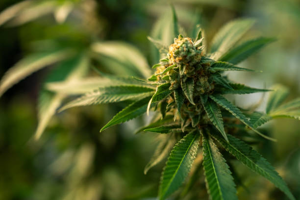

What is the role of THC in recovery for athletes?
Posted by on 2024-05-31
THC, or tetrahydrocannabinol, is a chemical compound found in marijuana that has gained attention for its potential role in aiding recovery for athletes. While THC is most commonly known for its psychoactive properties, research suggests it may also have therapeutic benefits when it comes to athletic recovery.
One of the main ways in which THC can aid athletes in their recovery is through its ability to reduce inflammation and pain. Inflammation is a natural response to exercise-induced muscle damage, but excessive inflammation can delay recovery and hinder performance. THC has been shown to have anti-inflammatory properties, which could help alleviate some of the soreness and discomfort that often accompanies intense physical activity.
Additionally, THC has been found to have analgesic effects, meaning it can help reduce pain perception. This could be particularly beneficial for athletes dealing with chronic pain conditions or injuries, allowing them to manage their symptoms more effectively and potentially continue training or competing without as much discomfort.
Furthermore, THC may also play a role in promoting restful sleep, which is crucial for proper recovery. Adequate sleep allows the body to repair and rebuild muscle tissue, replenish energy stores, and regulate hormone levels – all of which are essential for optimal athletic performance. By helping athletes achieve better quality sleep, THC could support their overall recovery process.
It's important to note that while there is evidence supporting the potential benefits of THC for athletic recovery, there are also risks associated with its use. Athletes should be aware of the legal implications of using cannabis products containing THC in their sport or competition setting, as well as any potential side effects or interactions with other medications they may be taking.
In conclusion, THC may have a role to play in aiding athlete recovery through its anti-inflammatory, analgesic, and sleep-promoting properties. However, it's essential for athletes to weigh the potential benefits against the risks before incorporating THC into their recovery routine. Consulting with a healthcare provider or sports medicine professional can help determine if using THC is appropriate for individual needs and circumstances.